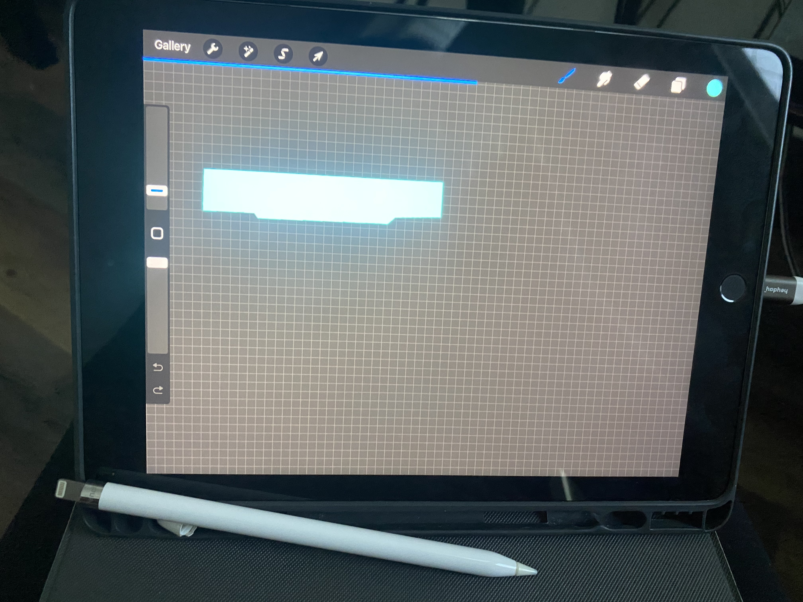

The First of Many

This project brought me many challenges but ultimately gave me much enjoyment to complete. One of the aspects I'm happy with are the software projects having a design resembling Cyberpunk aesthetics, while any hardware projects have a 90s computer aesthetic.
One area of innovation came about when I wanted the software projects to have a unique header and was unable to find a free vector that matched my vision so instead I drew it myself in Procreate.
